San Andreas · 101 records · coverage: complete
Missions — Grand Theft Auto: San Andreas
Story and side missions in order, with giver, location and reward.
Download missions.json Whole game bundle
| Image | # | Mission | Type | Giver | Location | Reward |
|---|---|---|---|---|---|---|
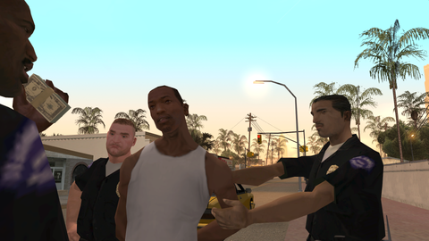 | 1 | In the Beginning | Story | Introduction | Los Santos | — |
 | 2 | Big Smoke | Story | Big Smoke | Ganton | — |
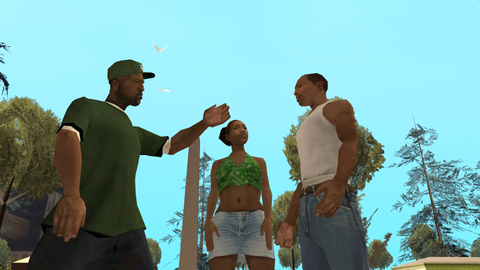 | 3 | Sweet & Kendl | Story | Sweet | Ganton | — |
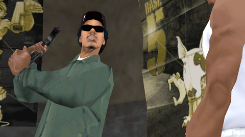 | 4 | Ryder | Story | Ryder | Ganton | — |
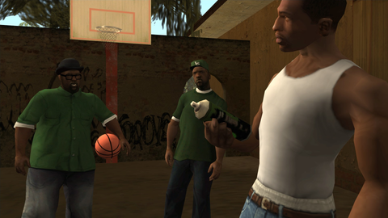 | 5 | Tagging Up Turf | Story | Sweet | Ganton | $200 |
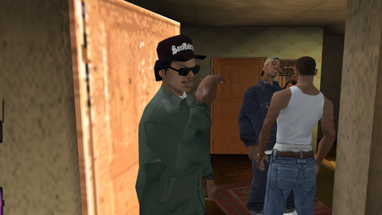 | 6 | Cleaning the Hood | Story | Sweet | Ganton | — |
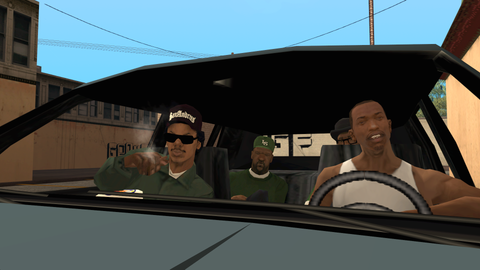 | 7 | Drive-Thru | Story | Sweet | Ganton | $200 |
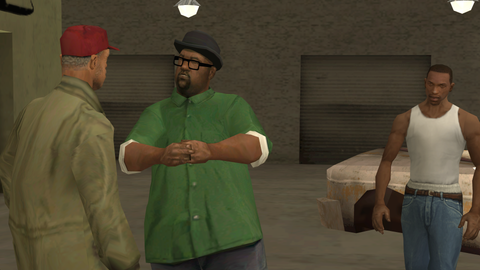 | 8 | Nines and AK's | Story | Sweet | Ganton | — |
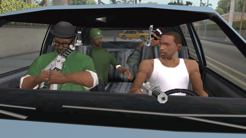 | 9 | Drive-By | Story | Sweet | Glen Park | $500 |
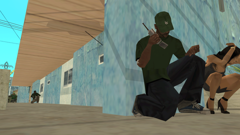 | 10 | Sweet's Girl | Story | Sweet | Idlewood | — |
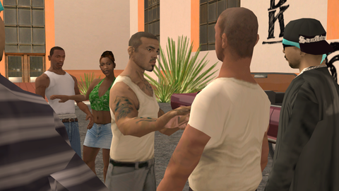 | 11 | Cesar Vialpando | Story | Sweet | El Corona | $50 |
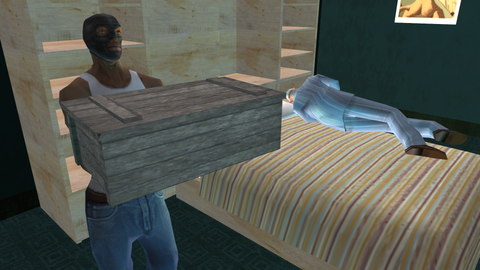 | 12 | Home Invasion | Story | Ryder | Willowfield | — |
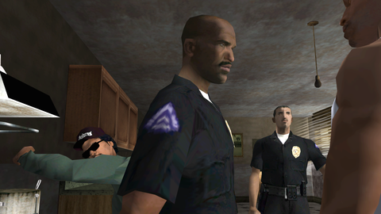 | 13 | Catalyst | Story | Ryder | Willowfield | — |
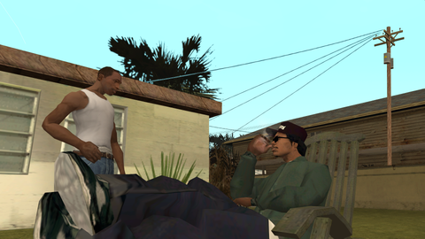 | 14 | Robbing Uncle Sam | Story | Ryder | Ocean Docks | — |
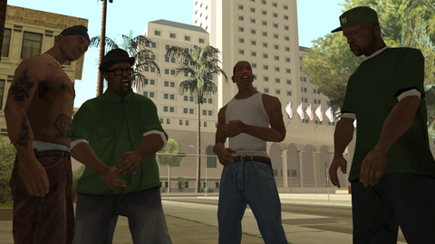 | 15 | OG Loc | Story | Big Smoke | Jefferson | — |
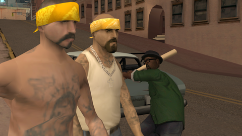 | 16 | Running Dog | Story | Big Smoke | East Los Santos | — |
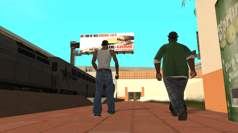 | 17 | Wrong Side of the Tracks | Story | Big Smoke | East Los Santos | — |
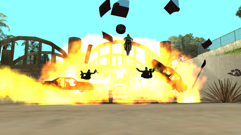 | 18 | Just Business | Story | Big Smoke | East Los Santos | — |
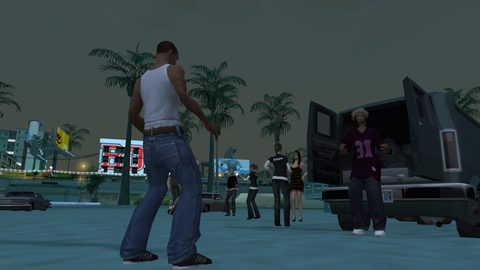 | 19 | Life's a Beach | Story | OG Loc | Verona Beach | — |
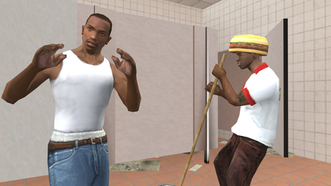 | 20 | Madd Dogg's Rhymes | Story | OG Loc | Mulholland | — |
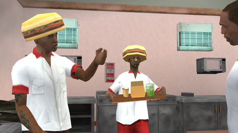 | 21 | Management Issues | Story | OG Loc | Mulholland | — |
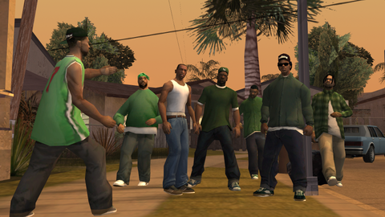 | 22 | House Party | Story | OG Loc | Ganton | — |
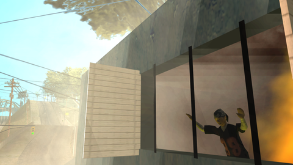 | 23 | Burning Desire | Story | C.R.A.S.H. | Idlewood | — |
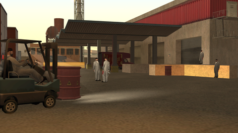 | 24 | Gray Imports | Story | C.R.A.S.H. | Ocean Docks | — |
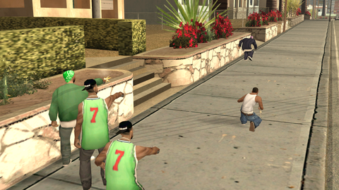 | 25 | Doberman | Story | Sweet | Glen Park | — |
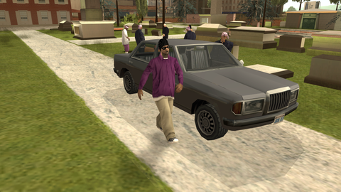 | 26 | Los Sepulcros | Story | Sweet | Los Sepulcros | — |
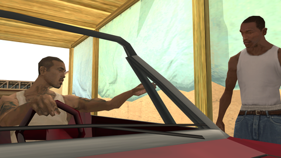 | 27 | High Stakes, Low-Rider | Story | Cesar Vialpando | Los Santos | $1,000 |
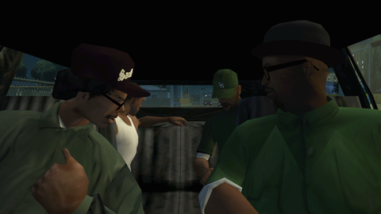 | 28 | Reuniting the Families | Story | Sweet | Jefferson Motel | — |
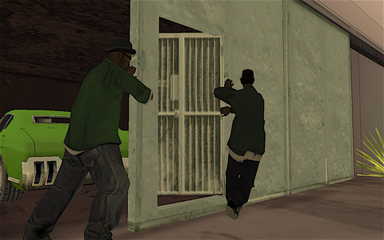 | 29 | The Green Sabre | Story | Sweet | Mulholland Intersection | — |
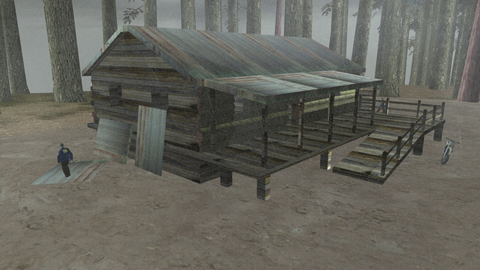 | 30 | Badlands | Story | C.R.A.S.H. | Whetstone | — |
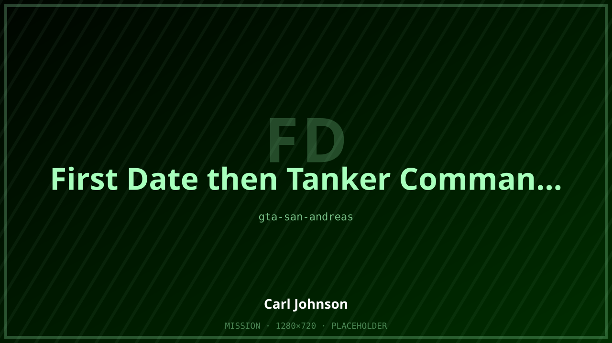 | 31 | First Date then Tanker Commander | Story | Catalina | Dillimore | $5,000 |
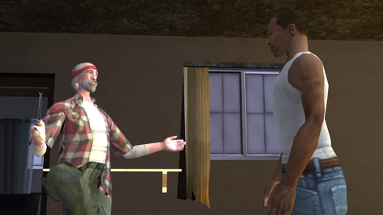 | 32 | Body Harvest | Story | The Truth | Leafy Hollow | — |
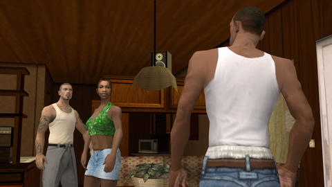 | 33 | King in Exile | Story | Cesar Vialpando | Whetstone | — |
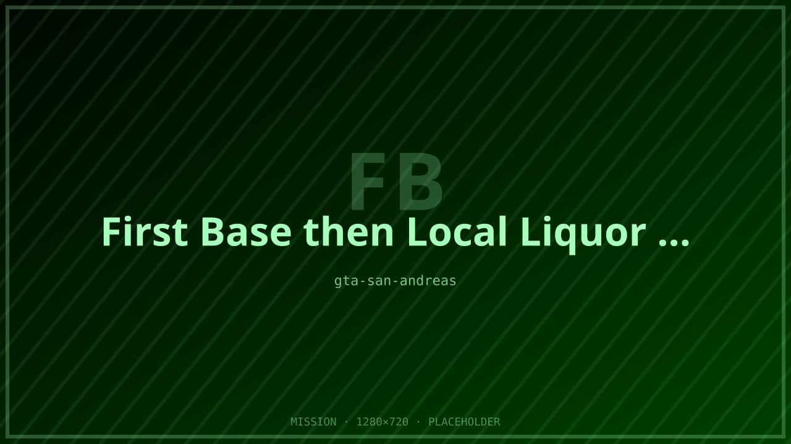 | 34 | First Base then Local Liquor Store | Story | Catalina | Blueberry | $1,000 |
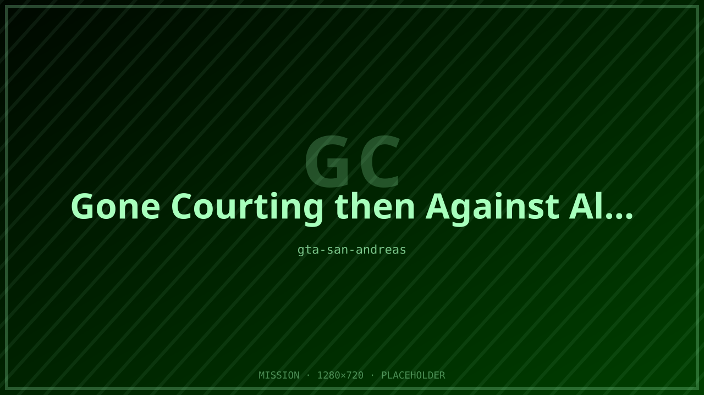 | 35 | Gone Courting then Against All Odds | Story | Catalina | Las Barrancas | $2,000 |
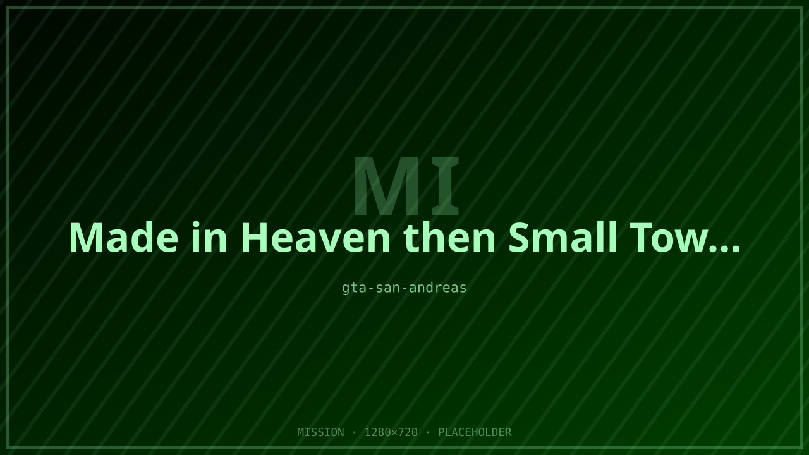 | 36 | Made in Heaven then Small Town Bank | Story | Catalina | Fort Carson | $10,000 |
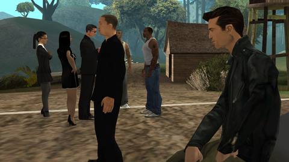 | 37 | Wu Zi Mu | Story | Cesar Vialpando | Whetstone | $5,000 |
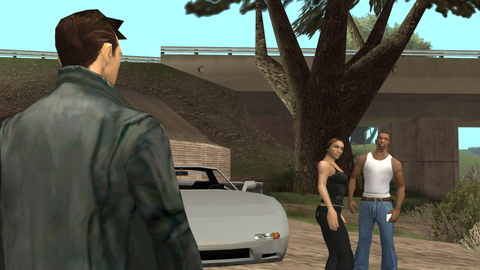 | 38 | Farewell, My Love... | Story | Cesar Vialpando | Whetstone | — |
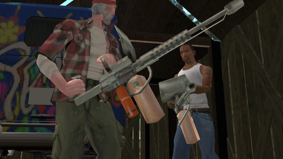 | 39 | Are You Going to San Fierro? | Story | The Truth | Flint County | — |
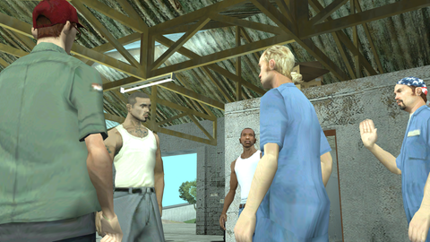 | 40 | Wear Flowers in Your Hair | Story | Carl Johnson | Doherty | — |
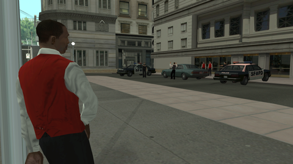 | 41 | 555 We Tip | Story | C.R.A.S.H. | San Fierro | — |
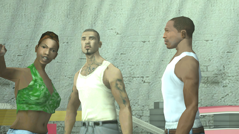 | 42 | Deconstruction | Story | Carl Johnson | Doherty | — |
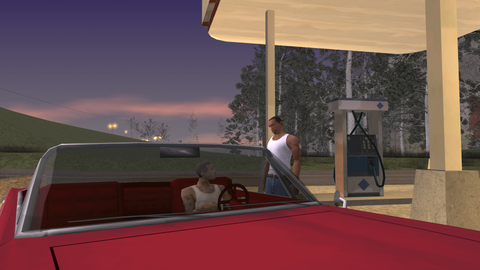 | 43 | Photo Opportunity | Story | Cesar Vialpando | San Fierro | — |
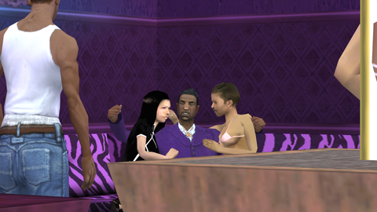 | 44 | Jizzy | Story | Loco Syndicate | San Fierro | $3,000 |
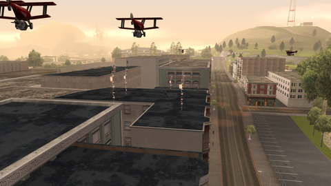 | 45 | Air Raid | Story | Zero | Zero's RC, Doherty | $3,000 |
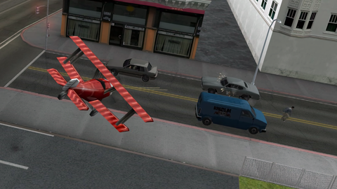 | 46 | Supply Lines... | Story | Zero | Zero's RC, Doherty | $5,000 |
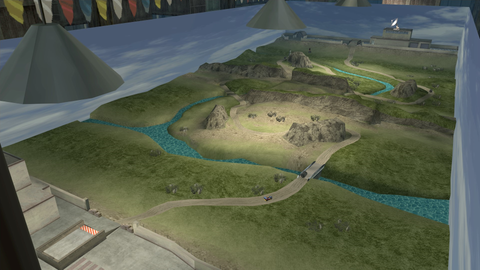 | 47 | New Model Army | Story | Zero | Zero's RC, Doherty | $7,000 |
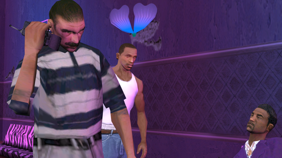 | 48 | T-Bone Mendez | Story | Loco Syndicate | San Fierro | $5,000 |
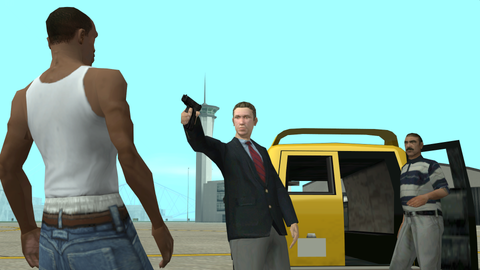 | 49 | Mike Toreno | Story | Loco Syndicate | San Fierro | $7,000 |
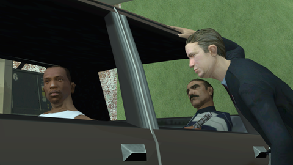 | 50 | Outrider | Story | Loco Syndicate | San Fierro | $9,000 |
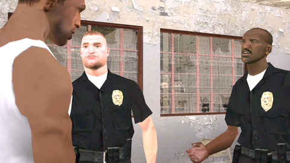 | 51 | Snail Trail | Story | C.R.A.S.H. | San Fierro | — |
| 52 | Ice Cold Killa | Story | Triads | San Fierro | $12,000 | |
| 53 | Back to School | Story | Driving School | San Fierro | — | |
| 54 | Pier 69 | Story | Cesar Vialpando | Pier 69 | $15,000 | |
| 55 | Toreno's Last Flight | Story | Woozie | Easter Basin | $18,000 | |
| 56 | Mountain Cloud Boys | Story | Woozie | Chinatown, San Fierro | $5,000 | |
| 57 | Ran Fa Li | Story | Woozie | Chinatown, San Fierro | $6,000 | |
| 58 | Lure | Story | Woozie | Chinatown, San Fierro | $8,000 | |
| 59 | Amphibious Assault | Story | Woozie | Bayside | $11,000 | |
| 60 | The Da Nang Thang | Story | Woozie | Easter Basin | $15,000 | |
| 61 | Yay Ka-Boom-Boom | Story | Woozie | Doherty | $25,000 | |
| 62 | Zeroing In | Story | Cesar Vialpando | San Fierro | $5,000 | |
| 63 | Test Drive | Story | Cesar Vialpando | San Fierro | $5,000 | |
| 64 | Customs Fast Track | Story | Cesar Vialpando | Easter Basin | $10,000 | |
| 65 | Puncture Wounds | Story | Cesar Vialpando | Wang Cars, Doherty | $5,000 | |
| 66 | Monster | Story | Mike Toreno | Las Barrancas | $1,000 | |
| 67 | Highjack | Story | Mike Toreno | Las Venturas | $7,000 | |
| 68 | Interdiction | Story | Mike Toreno | Las Brujas | $1,000 | |
| 69 | Verdant Meadows | Story | Mike Toreno | Verdant Meadows | — | |
| 70 | Learning to Fly | Story | Mike Toreno | Verdant Meadows | — | |
| 71 | N.O.E. | Story | Mike Toreno | Verdant Meadows | $15,000 | |
| 72 | Stowaway | Story | Mike Toreno | Verdant Meadows | $20,000 | |
| 73 | Black Project | Story | The Truth | Area 69 | — | |
| 74 | Green Goo | Story | The Truth | Area 69 | $20,000 | |
| 75 | Fender Ketchup | Story | Woozie | Las Venturas | $5,000 | |
| 76 | Explosive Situation | Story | Woozie | Las Venturas | $7,000 | |
| 77 | You've Had Your Chips | Story | Woozie | Las Venturas | $10,000 | |
| 78 | Don Peyote | Story | The Truth | Las Venturas | — | |
| 79 | Architectural Espionage | Story | Woozie | Las Venturas | — | |
| 80 | Key to Her Heart | Story | Woozie | Las Venturas | — | |
| 81 | Dam and Blast | Story | Woozie | Las Venturas | — | |
| 82 | Cop Wheels | Story | Woozie | Las Venturas | — | |
| 83 | Up, Up and Away! | Heist | Woozie | Las Venturas | — | |
| 84 | Intensive Care | Story | Ken Rosenberg | Las Venturas | $5,000 | |
| 85 | The Meat Business | Story | Ken Rosenberg | Las Venturas | $8,000 | |
 | 86 | Madd Dogg | Story | Madd Dogg | Las Venturas | — |
| 87 | Fish in a Barrel | Story | Woozie | Las Venturas | — | |
| 88 | Misappropriation | Story | C.R.A.S.H. | Las Venturas | — | |
| 89 | Freefall | Story | Salvatore Leone | Las Venturas | $15,000 | |
| 90 | High Noon | Story | C.R.A.S.H. | Las Venturas | — | |
| 91 | Saint Mark's Bistro | Story | Salvatore Leone | Las Venturas | $20,000 | |
| 92 | Breaking the Bank at Caligula's | Heist | Woozie | Caligula's Palace | $100,000 | |
| 93 | A Home in the Hills | Story | Woozie | Mulholland | — | |
| 94 | Vertical Bird | Story | Mike Toreno | Las Venturas | $50,000 | |
| 95 | Home Coming | Story | Mike Toreno | Los Santos | — | |
| 96 | Beat Down on B Dup | Story | Sweet | Ganton | — | |
| 97 | Cut Throat Business | Story | Madd Dogg | Los Santos | — | |
| 98 | Grove 4 Life | Story | Sweet | Ganton | $10,000 | |
| 99 | Riot | Story | Carl Johnson | Los Santos | — | |
| 100 | Los Desperados | Story | Sweet | El Corona | — | |
| 101 | End of the Line | Story | Sweet | Los Santos | $250,000 |
Field definitions
| Field | Type | Required | Notes |
|---|---|---|---|
order | integer | yes | |
name | string | yes | |
type | string | yes | one of: Story, Side, Asset, Heist, Contact, Strangers & Freaks, Business, Vehicle, Random Event |
giver | string | yes | |
location | string | yes | |
reward | object | yes | |
summary | string | yes | |
requirements | array | no | array of strings |
playable | string | no | |
image | string | null | no | |
verified | boolean | yes | |
source | string | no |